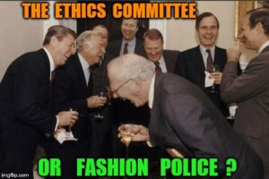

In the middle of this year a friend who had decamped to CSIRO from government wrote to me and asked me to participate in an interview exploring the economic impact of next generation broadband in Australia. Towards the end of his email he wrote.If you are willing to take part in an interview, you should understand that:
· Your participation in the project is entirely voluntary and you are free to withdraw from the study at any time, without penalty and without providing a reason for doing so.
· You will be asked whether you consent to having your answers to the interview questions recorded for transcription purposes.
· Your name and that of your organisation will not be included in any publications from these interviews unless you provide specific permission for us to identify you as a participant in the research.
· Prior to the reporting of the study findings, you can request that any of the information that you provide in the interview be excluded from the analysis.
· If you have any concerns about the study or the interview process, you can contact the CSIRO’s Manager of Social Responsibility and Ethics [on phone number provided].
I wrote back immediately saying "Very happy to participate so long as I can avoid the kind of red tape intimated in your long list of things I should understand." I also indicated that I was happy to provide blanket consent for them to do whatever they liked with the interview with me - after all, that's the standard I'm used to from frequent interaction with the media. My friend indicated his optimism that sense would be seen and the interview would go ahead.
This enterprise concluded with an email from the contact person mentioned at the end of the litany of consents above as follows:
I would like to thank you very much for your interest in contributing to our project examining the anticipated impact of next generation broadband.
After our phone conversation earlier this week, I contacted our ethics officer regarding the ‘informed consent’ process. At this point in time, our research needs to abide by the ‘National Statement on Ethical Conduct in Human Research’ and CSIRO policy. Unfortunately, your response . . . by email was considered insufficient in terms of conveying informed consent.
Without being able to obtain oral consent prior to the recording of the interview, I am not able to proceed with our scheduled meeting on the 24th May.
I would like to make it clear, however, that I respect your choice not to provide further evidence of consent and appreciate the time you have offered.
You'd think I'd learned my lesson. But about a month ago a very persuasive person - which is to say someone I like - got me to agree to do a day of interviews at Monash University - interviewing students seeking enrollment in an exciting new venture for them: "BSc Global Challenges". I have already told her that I'll simply refuse to proceed if there is too much bureaucracy.
I have just received the brief for the interviews which contains this paragraph.
Interview topics to avoid
Like most organisations, Monash University is committed to promoting equal opportunity in education. Throughout your questioning and note taking during the interviews, please avoid the following “protected attributes” - Age, breastfeeding, career status, disability, employment activity, gender identity, industrial activity, lawful sexual activity, marital status, parental status, personal association, physical features, political belief of activity, pregnancy, or potential pregnancy, race, religious belief of activity, sex, sexual harassment and sexual orientation.
Well, it doesn't involve me in any inconvenience so the dummy remains unexpectorated, but you may not be surprised to hear how much this incenses me. I am, again as you might guess, supportive of the intent which is to reduce discrimination on various grounds (at the same time as remaining blissfully oblivious to others) but the lawyers' approach to this is to simply make any reference to these issues taboo. Well I might quite like to engage a student on a number of these issues whilst remaining true to the spirit of the policy - indeed it would enable me to remain truer to it. After all, it would be of interest to me if a prospective student was a homophobe, and I might be asking about breastfeeding or any number of other things in order to understand the situation of someone who was breastfeeding - it might lead to a worthwhile discussion about challenges etc. But it turns out it's much simpler to make a rule that we are all to be presumed guilty if we discuss such things. One might write this off as just a pity, a small silly excess to which we have gone, but it is an example of a larger phenomenon that is becoming more and more evident and unfortunate - the domination of daily life with edicts from on high. In this case, an issue arises. Those at the top of the hierarchical system then get into 'something must be done' mode. It is time to issue instructions. So instructions are issued. The problem is that the issue may be one of considerable subtlety. In the case of regulation, we really need the people at the coalface to be thinking about the efficiency of what they're doing within a larger whole. It's very difficult for the top, or the centre to get this to happen - as it has to happen at the periphery, but no matter. We'll issue instructions. All those making regulations must do a regulatory impact statement - to the letter of the thinking of those at the top, but alas not to the spirit. Likewise here, the real energy in the system is not really deployed trying to engage with the issue and minimise the kinds of pernicious discrimination that the policy proscribes. The energy is directed towards minimising the organisation's exposure to risk. And once this is the frame, the actual issue pretty much disappears, indeed the edict is precisely to make it disappear in all the organisation's official conduct. So much for engaging with the issue and trying to do something about it. We're just covering our arses here. The other thing these policies do when implemented in this way is they violate another great subtlety of human interaction. There is necessarily a great deal that is implicit in the mores of human interaction - something which preserves scope for ambiguity, irony and improvisation. The ideas that are being rolled out by policies such as this seek to make everything explicit and unambiguous or to consign it to silence. And those on the left wonder why issues like 'political correctness' play as well as they do for the right. Well the right is the only place that is comfortable calling out the idiocy of this kind of thing. And people don't like being coerced into doing farcical things. It might seem small, but, at least for some of us it's not experienced as a small thing. Red tape, political correctness and edicts from on high: the interview.
You are of course totally right Nicholas.
I sometimes wonder whether a contributing factor is (what I anecdotally perceive as greater than ever) disconnect between the people at the top and what actually happens. 'Operational disconnect' it is called in a most wonderful book "The Blunders of our Governments".
Nicholas,
Next time you get one of these PC requests you should exclude yourself from involvement on the grounds that you do not wish to reinforce your white male privilege ;)
That CSIRO ethics form is mild by university standards. You don't even have questions/statements telling you that what you say might be illegal in some countries, the phone number of a committee to complain to if something goes wrong, the number of a counselling service in case you feel sad after the interview, that no deception will be used......
This generally occurs for anything that goes through these sorts of organisations. If someone was looking at how, for example, your retina responds to different colours, you'd still get the same questions, even if they were entirely inappropriate.
Nicholas There is something profound about this piece.
Great piece, Nick. Conrad is right that things are even worse than you sketch. Let me know if it irks you enough to do something about it. There are many ways.
Of course they call it out: the proscribed topics are all culture war battlefields on which the Right has lost resoundingly, but just can't stop fighting.
It's a shame that institutions have to be rigid and lawyerly just to prevent the howler monkeys descending on them any time an example of progress is mentioned, but if we're concerned about where an institution is directing its energy, how productive is it to foster arguments which invariably turn petty and personal, and always end with the same winners and losers?
As a Faculty research manager I once served as secretary of a Human Research Ethics Committee that reviewed honours level thesis proposals. The process had useful aspects, students (especially in professional writing) sometimes put up very overambitious proposals to interview dozens of people (which their supervisors should have advised against) but it also operated to discourage anything that might attract controversial media attention, such as religion. At one point it was raised that 3rd year students were interviewing people for their projects I think we agreed not to notice this!
This reminds me of this classic from Stuff White People Like:
It is also valuable to know that white people spend a significant portion of their time preparing for the moment when they will be offended. They read magazines, books, and watch documentaries all in hopes that one day they will encounter a person who will say something offensive. When this happens, they can leap into action with quotes, statistics, and historical examples. Once they have finished lecturing another white person about how it’s wrong to use the term “black” instead of “African-American,” they can sit back and relax in the knowledge that they have made a difference.
http://stuffwhitepeoplelike.com/2008/05/28/101-being-offended/
Thanks for the article Nicholas. It has brought attention to my mind of some things we do, which we think are progressive and useful, but which turn out to impede and stress out a lot of others involved. As. Proud lefty, I do wonder why you have sought to blame the left. Surely these edicts are likely from above, whatever the "direction" of the edictor. In fact, I would have thought that those on the right, who get rid of any advice that might oppose their view, might be actually more likely to edict.....but that's just me and my bias.
I think it is more in the category of "institutionalised stupidity", not in some sort of left/right dichotomy.
I agree -- I imagine it's also an interesting place to start when thinking of how and why all these big organisations end up there, since there is always paranoia from upper management who want to indemnify themselves against everything (although whether any of these things would actually hold any legal tender is unknown) and lots of lower level people running around trying to appear useful. So the social dynamics are interesting.
Was very struck by " seek to make everything explicit and unambiguous or to consign it to silence."
The following is from Stephen J Gould's. The structure of evolutionary theory, pg 598.
It is a footnote to a long discussion consideration of the, long running and vexed question- how we define a "individual", for the purposes of the working of evolution:
I have struggled with this all my professional life, and have often wondered why the questions raised seem so much more recalcitrant, and so much more cascading in implication, than for any other problem in Darwinian theory. I don't think that mere personal stupidity underlies my puzzlement- or rather, if so, the mental limitations must be largely collective,because other participants share the same struggle and express the same frustrations. I don't mean to sound grandiloquent or exculpatory, but I seriously wonder if some of the difficulties might not arise largely from limitations in the common mental machinery of Homo sapiens. Levi-Strauss and the French structuralists may well be correct in holding that human brains work best as dichotomizing machines at single levels. We make our fundamental divisions by two (nature and culture or "the raw and the cooked" in Levi-Strauss's terms, night and day,male and female), and we therefore experience great mental difficulty with continua, and with any system other than a two-valued logic (hence Aristotle's law of the excluded middle, and other similar guides). We are especially ill-equipped to think hierarchically, and to juggle simultaneous influences from several nested levels upon the foci of our interest. The hierarchal theory of natural selection rests upon all these intrinsically difficult modes of reasoning.
Thanks for your comment Barbara,
Please note, I didn't 'blame the left' for these things. I said something much more circumscribed which was that the right was the only place where you could call these things out for what they are, without wringing of hands or obeisance to ideological gods. "I'm not a racist but . . ." I mean even I had to go through these things, framing all my objections in a similar way.
But let me go further, and in doing so I hope you'll appreciate that I'm being direct, not aggressive - or trying to be.
My first paragraph above is really a bit disingenuous - a bit of fancy footwork. Of course if I were plain speaking or putting it simply I would "blame the left". The agenda sanctified by the Monash Uni demarkation of "cultural demilitarised zone" is the cultural, non-discriminatory agenda of the left. The left should unashamedly take credit for its good points which are considerable and which, virtually all would agree outweigh the bad. (Mark Latham is intimating as much with his all new "call me an optimist" schtick that the left have won the debate, come into government, made some changes and then exited putting the right in charge of implementing them.)
But the left should be far more hard headed about confronting the downsides. And far less quick to accuse critics of bad faith. Perhaps if it did, it wouldn't be in such a sorry state amongst the voters of Western Sydney. And perhaps it might have found its way to the next generation of its agenda. Because it certainly needs a bit of refurbishing.
The other player is our truly dysfunctional legal system, which gives systems administrators a legitimate reason to simply dumb it all down and outlaw any discussion that could then be used to argue some case - with QCs pocketing $15 for each minute their precious attention is given to staging the resulting claims and counterclaims.
Agree, though the risk of being successfully sued is much lower than it was in the old days. There used to be whole floors in Philip St of people who did nothing but 'damages' claims, all gone now. Is often either an excuse or simple ignorance.
Nice New Yorker cartoon here illustrating my larger theme - which is the way in which the division of labour in some of our deliberative processes are deranged.
I detect an anger in your original article and I think if one sees things as "political correctness gone mad ", I can understand the feeling of resentment. One can readily achieve what is desired if one respects others. Respect! That's the only edict that needs to be made. Political sidedness is then irrelevant.
Respect on the Left seems to consist of looking for ways to call me a racist so that their reality is not challenged. Check your privilege, anger-detecting person. :-)
The ABC received a complaint about Peppa Pig, viz.
Hi ChrisPer,
I had decided that this blog was for those who love the idea of showing off their vocabulary and intellectual 'wisdom', though I do love it when the perfect word fits the situation, and especially when I have to rush off to the dictionary. I do love to learn.
Then came this last entry and I have to say that despite its apparent simplicity, I just don't understand what was said. The writer must have had some experience with a lefty calling him/ her a 'racist'. And the writer obviously feels that this label is unfair. Not sure where this comes into the previous argument.
And 'privelidge'? What? Look, I'm the first to be grateful for living in our wonderful ,though not perfect, community of Australia. I am privelidged in so many ways. Very grateful for my disability pension which allows me to struggle towards retirement on my super. Grateful for the circumstances allowing me to have a wonderful daughter. I could go on counting my blessings which I like to do and practice doing. Just not sure how this comment relates to being a lefty. Someone resents me because of a generalisation about all given a label. I guess that's human nature.
I do wonder why this person may have been called a racist, with an impact carried on in the psyche. I wonder if some behaviour has been perceived by another as racist, denied by the writer, may be actually questionable and that's what's caused this anger. see what a great anger- detector I am?! Maybe we all need to lighten up. I would much rather not go around detecting anger.
But please, can we not generalise about what attitudes might be expected of those with labels affixed to them.
It's fun to pretend for a moment, that my opinion my be read (.and laughed at.)
Barb, thanks for your reply. Sounds like all my assumptions are as foolish wind. I havent visited Club Troppo for some years. Gave up on The Drum completely two years ago, as the relentless stupidity of the comments left me in despair. Found The Conversation became tedious as it became more and more a monologue for one side of politics.
My kids (uni age) have a catchphrase: 'Check your privilege', an ironic phrase which meant in its original form 'Probably you think that way because your racial/gender/wealth/other privilege blinds you to the lived reality of the people oppressed by your kind of thinking'. Now the kids use it also as an ironic synonym for 'how dare you disagree with me', which also insinuates 'your shirt is untucked, your shoelace undone and your fly is halfway down'.
I find that the 'nice people' that display the 'right opinions' have moved far from reason because apparently the fashion does not allow reason to moderate their thought. Like the old SPA, adhering to the faith is costing their intellectual honesty. If I broach any of the topics of the day, I will be asked a question designed to test my 'side'. For instance, if I mention my concern that the ABC went too far running the recent sabotage operation against Abbott over Indonesia, the code phrase from a respected university AI researcher was 'But dont you think its needed for balance?' to which I ask, bemused, 'Balance against what?' the answer: 'Racism...' The person may never have met a real racist in their life, but has a tribal hate of a constructed idea of 'racism' that licenses any action against political opponents whatever.
Nicks article touches on this by noting that wordy stupidity in the research sector plays up to the preconception about 'political correctness' on the Right. I daily work in a world where real people destroy the misconceptions of poltical correctness with violence. It shakes me to discover that despite the last few years, people cling to absurd ideas all the more strongly by defending them not with argument but with hate.
In this case "political correctness" is MBAs, which the laissez faire Right likes to have in charge of academia, limiting the scope of discussion in order to avoid topics that invariably cause the culture war Right to lose its mind and attack the institution holding the discussion, which hinders performance in the free market.
Damn the censorious, over-sensitive Left.
The lassez faire Right naturally have control of University appointments. Thats probably why teaching is now based on an exploited underclass of postgrad students, and adjunct profs from the real world while administration staff multiply on full salary. This is capitalism at its finest, and would never happen if the institutions were run by people of the Left like, say... Alternatively, we could say that all those disclaimers and foolish overwrought rules exist because privileged whining teams manufacture offense at any opportunity and this inconveniences the departmental staff. What are you smoking Sancho? Can I try some?
Well let's ask the source.
Nicholas, who in the university is making the decisions and giving the orders about which topics can be discussed?
Note to self: here's Ed Miliband's latest NeoBlairite recipie of top down "creative anarchy". All part of the same story.
I was in Boston in January and went to a Celtics basketball game. Trying to buy a beer I was asked for my passport. Not having it on me I offered my licence, but they said they needed a passport and refused me a beer, on the grounds that I might be under-age. Nothing like edicts sent down from on high to cover arses.